Cátedra 16: Sistemas Multicomponentes
Extensión de la termodinámica a mezclas y sistemas con varias especies químicas: el potencial químico $\mu_i$ governa el equilibrio entre componentes, la ecuación de Gibbs-Duhem limita los grados de libertad, y la regla de las fases se generaliza.
Temas que cubre
- Potencial químico $\mu_i = (\partial G/\partial N_i)_{T,p,N_{j\neq i}}$: coste en energía de Gibbs de agregar la especie $i$
- Condición de equilibrio en mezclas: $\mu_i$ igual en todas las fases para cada componente
- Ecuación de Gibbs-Duhem: $SdT - Vdp + \sum_i N_i\,d\mu_i = 0$
- Mezclas ideales: $\mu_i = \mu_i^0(T,p) + k_BT\ln x_i$, entropía de mezcla
- Equilibrio químico: $\sum_i \nu_i \mu_i = 0$ y constante de equilibrio $K(T)$
- Regla de las fases de Gibbs generalizada: $F = C - \mathcal{P} + 2$
Conceptos clave
Potencial químico de la especie $i$
$\mu_i = (\partial G/\partial N_i)_{T,p}$ es el cambio en energía de Gibbs al agregar una molécula de la especie $i$ a $T$ y $p$ fijos. En el equilibrio entre fases, $\mu_i^{(\alpha)} = \mu_i^{(\beta)}$ para cada componente $i$.
Ecuación de Gibbs-Duhem
$S\,dT - V\,dp + \sum_i N_i\,d\mu_i = 0$ es una restricción entre los cambios de las variables intensivas. Para un sistema con $C$ componentes, de los $C+2$ variables intensivas $(T,p,\mu_1,\ldots,\mu_C)$ solo $C+1$ son independientes.
Mezcla ideal
$\mu_i = \mu_i^0(T,p) + k_BT\ln x_i$, donde $x_i = N_i/N$ es la fracción molar. La entropía de mezcla $\Delta S_{mix} = -Nk_B \sum_i x_i\ln x_i \geq 0$ es siempre positiva: la mezcla espontánea aumenta la entropía.
Equilibrio químico
Para la reacción $\sum_i \nu_i A_i = 0$ (con $\nu_i > 0$ para productos, $\nu_i < 0$ para reactivos), el equilibrio exige $\sum_i \nu_i \mu_i = 0$. De aquí se obtiene la constante $K(T) = \prod_i x_i^{\nu_i}$, que depende solo de $T$.
Fórmulas fundamentales



Qué hay que entender
- El potencial químico $\mu_i$ es la variable que se iguala en el equilibrio entre fases — exactamente como $T$ se iguala en el equilibrio térmico y $p$ en el mecánico.
- La entropía de mezcla $\Delta S_{mix} = -Nk_B \sum_i x_i\ln x_i$ es siempre positiva: mezclar gases ideales es irreversible aunque no haya interacciones. Recuperar la separación requiere trabajo.
- La ecuación de Gibbs-Duhem impone que en una mezcla binaria a $T$ y $p$ fijos, si $\mu_1$ sube con $x_1$, entonces $\mu_2$ baja con $x_1$ (compensación).
- La constante de equilibrio $K(T)$ depende solo de $T$ (no de $p$ para gases ideales) y sigue la ecuación de van't Hoff: $d\ln K/dT = \Delta H^0/(k_BT^2)$.